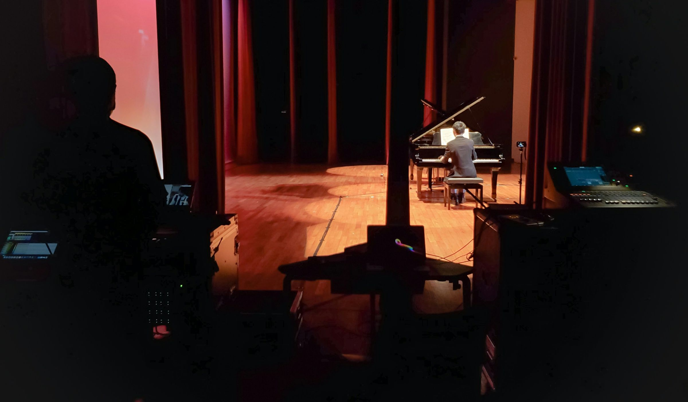

소리를 듣는 귀를
먼저 키웁니다
전공별 마스터클래스와 앙상블 프로젝트를 함께 운영합니다. 개인 레슨 중심의 학습에서 벗어나 함께 연주하며 듣는 경험을 쌓고, 무대 위에서의 호흡과 표현을 익힙니다.
이렇게 배웁니다
개인 지도에서 앙상블,
무대까지 한 걸음씩
- 01

전공별 마스터클래스
전공 교강사가 개인 레퍼토리를 깊이 지도합니다.
- 02

앙상블 프로젝트
실내악·합주로 편성해 듣고 맞추는 연주를 익힙니다.
- 무대 리허설 사진 자리03
무대 리허설 · 발표
실제 공연 환경에서 호흡과 표현을 다듬습니다.
함께 다루는 것음악 이론 · 청음
교육 포인트
혼자에서 함께로,
함께에서 관객 앞으로.
- 1 : 1
전공 심화
1:1 마스터클래스로 레퍼토리를 깊이 다룹니다.
- 앙상블
함께 연주하기
앙상블 편성으로 듣고 맞추는 경험을 넓힙니다.
- 관객 앞
무대 경험
리허설과 발표로 실제 무대의 호흡을 익힙니다.
몸의 언어를
정확하게 다듬는 시간.
클래식 발레를 중심으로 기본기와 표현력을 함께 다루는 집중 워크숍입니다. 바 워크와 센터 워크, 배리에이션 클래스를 통해 기초를 정비하고, 회차별 기록 영상으로 자신의 움직임을 되돌아볼 수 있도록 구성했습니다.
운영 개요
- 운영 기간
- 2026년 7월 ~ 8월
- 장소
- 한국예술영재교육원 광주캠퍼스
- 대상
- 무용 분야 참여 학생
- 운영 방식
- 수준별 반 편성 · 분야별 전담 교강사 지도
- 기록
- 전 회차 영상 촬영 및 아카이브 등록
주요 커리큘럼
- 01
바 워크(Barre)
기본 자세와 턴아웃, 정렬 교정
- 02
센터 워크(Center)
아다지오·알레그로·회전 기술
- 03
배리에이션 클래스
레퍼토리 해석과 표현
- 04
컨템포러리 무브먼트
즉흥과 신체 인식
- 05
기록 영상 피드백
회차별 촬영본을 통한 자기 점검
교육 포인트
- 01
기본기 재정비
정렬과 턴아웃부터 다시 잡아 부상 없이 성장할 수 있는 몸을 만듭니다.
- 02
표현력 확장
레퍼토리 해석과 즉흥 작업을 통해 자기만의 표현 언어를 찾습니다.
- 03
영상 기반 피드백
회차별 촬영본을 함께 보며 구체적인 개선점을 확인합니다.
갤러리
오래된 것을
지금의 몸으로.
전통예술 집중 워크숍은 기악·성악·무용을 아우르는 통합 과정으로 운영됩니다. 전통 레퍼토리를 익히는 동시에 현재의 감각으로 재해석하는 창작 작업을 함께 진행합니다.
운영 개요
- 운영 기간
- 2026년 8월
- 장소
- 한국예술종합학교 석관동캠퍼스
- 대상
- 전통예술 분야 참여 학생
- 운영 방식
- 기악·성악·무용 통합 워크숍 + 창작 세션
- 기록
- 전 회차 영상 기록 및 아카이브 등록
주요 커리큘럼
- 01
전통 기악·성악
악기별·발성별 기초와 레퍼토리
- 02
전통무용
기본 춤사위와 작품 학습
- 03
장단·호흡 훈련
합주의 기초가 되는 리듬 감각
- 04
창작 워크숍
전통 어법을 활용한 재해석 작업
- 05
발표 세션
장단 합주 발표와 상호 피드백
교육 포인트
- 01
통합 과정
기악·성악·무용을 나누지 않고 함께 배우며 합의 감각을 익힙니다.
- 02
장단 중심
모든 과정의 기초를 장단과 호흡 훈련에 둡니다.
- 03
현재의 재해석
전통 어법을 바탕으로 지금의 이야기를 만드는 창작을 시도합니다.
갤러리
완성보다
과정을 남깁니다.
창작 스튜디오 형태로 운영되며, 개인 작업과 공동 작업을 병행합니다. 재료 실험부터 아이디어 전개, 최종 결과전시까지의 전 과정을 기록하여 작업의 흐름 자체를 자산으로 남깁니다.
운영 개요
- 운영 기간
- 2026년 8월
- 장소
- 한국과학기술원 일대
- 대상
- 미술 분야 참여 학생
- 운영 방식
- 스튜디오형 창작 + 크리틱 세션
- 기록
- 작업 과정 사진·영상 기록 및 결과전시 아카이빙
주요 커리큘럼
- 01
드로잉·재료 실험
매체별 특성 탐색
- 02
아이디어 전개
리서치와 스케치북 작업
- 03
개인 창작 프로젝트
주제 설정부터 제작까지
- 04
공동 작업
협업 기반 설치·프로젝트
- 05
결과전시
작품 설치 및 크리틱, 도록 기록
교육 포인트
- 01
과정 중심
완성작만이 아니라 작업이 만들어지는 과정을 함께 기록합니다.
- 02
크리틱 문화
서로의 작업을 말로 설명하고 질문하는 훈련을 반복합니다.
- 03
결과전시
실제 전시 형식으로 작품을 설치하고 관객을 만납니다.